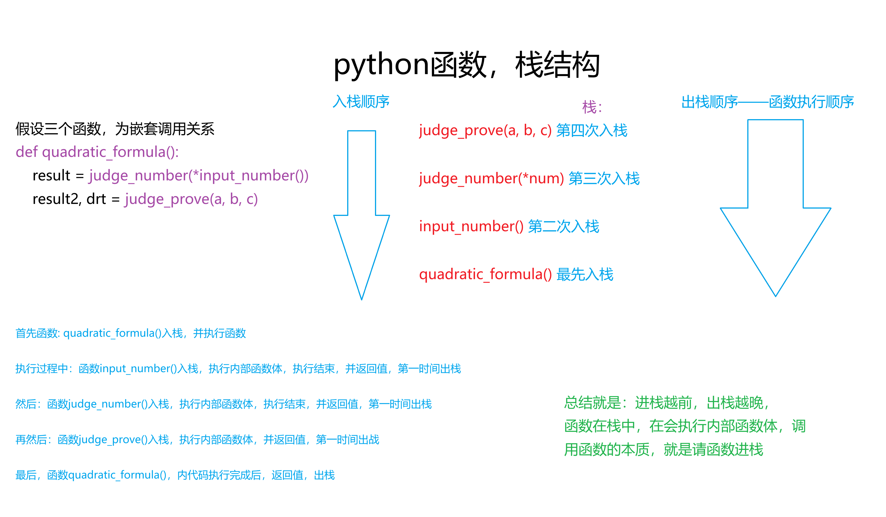

函数嵌套调用
- 顾名思义：嵌套调用指的是在一个函数中，又调用了另外一个函数
- 函数调用遵循栈结构，最后被调用的函数最先返回LTFO(
Last In First Out，后进先出) -
JavaScript与python：栈(Stack)与堆Heep完全对比表对比维度 JavaScriptpython栈( Stack)长什么样？- 一块紧凑的内存区域
- 用于存放基本类型(
number、string、Boolean、undefined) - 和 对象引用地址(指针)
- 一块紧凑的内存区域
- 用于存放所有变量的引用(因为python中一切皆对象)
- 栈里村的都是指向堆中对象的"指针"
堆( Heep)长什么样？- 一块松散的大内存
- 用于存放
复杂数据类型(
对象{}、数组[]、函数function)的实际数据
- 一块松散的大内存
- 用于存放
所有对象的实际数据(
数字int、字符串str、列表[]、字典{}、实例等)
变量访问方式 - 基本数据类型：变量直接存储值(值在栈里)
- 引用类型：变量存储地址(栈里存地址)，通过地址在堆里去找真正的数据
- 所有类型：变量存的是"对象的引用"(地址在栈里)，数据本体全在堆里
有没有“值类型”与“引用类型”之分？ - ✅ 有
-
number、string、boolean、undefined、null、Symbol等基本数据类型，是值类型(存栈) -
数组、字典、集合等复杂数据类型(也叫，引用类型)，存堆
- ❌ 没有这个分类
- Python 统一视为“对象”
- 只是不可变对象（
int、str、tuple） - 可变对象（
list、dict、set） - 在修改时的行为表现不同。
为什么看起来不一样？ 因为 JS 里 let a = 10，变量 a 直接存了 10 这个数值在栈里。因为 Python 里 a = 10，变量 a 存的是指向堆中 10 这个对象的地址，而不是直接存 10 本身。“值传递”和“引用传递”呢？ 基本类型按值传递（复制值），引用类型按引用传递（复制地址）。 统一是“引用传递”（复制的是对象的引用），但因为不可变对象无法被修改，所以看起来像值传递 什么是“调用栈（Call Stack）”？ 用于记录函数执行顺序的“后进先出”结构。函数的局部变量（包括基本值和引用地址）也存放在这里。 同样用于记录函数执行顺序。函数的局部变量引用也存放在这里。 什么是“内存栈区”？ 就是存放基本类型和引用地址的那块“栈内存”。 就是存放所有变量引用的那块“栈内存”。 一句话总结它们的关系 “栈里存地址（或基本值），堆里存真数据” “栈里全是地址，堆里全是数据” 综合对比 共同的底层机制 说明 栈（Stack） 后进先出（LIFO）的内存区域，自动管理，速度极快，空间小，存的是“指针”或“小数据”。 堆（Heap） 大块内存区域，需要垃圾回收（GC）管理，速度相对慢，存的是“大对象”本身。 关键差异 JS 给基本类型“开了后门”，允许它们直接住进栈里；Python 则一视同仁，所有数据都住堆里，栈里只留“门牌号”。 -

-
因为
JavaScript与python的栈与堆有区别，引出值比较与地址比较区别JavaScript与python，值对比与地址对比区别
JavaScript的基本数据类型，不会创建地址，都存在栈中、复杂数据类型(数组、对象...)会创建地址 python所有数据，均被创建地址，每个数据都会有一个地址 比较场景 JavaScript代码结果 python代码结果 基本类型比较 1 == '1'1 === '1'
true，字符串:'1'隐式转换为数字1false(类型不同)
1 == '1'False(但python更严格，一般不会隐式转)对象内容相同 {a:1} == {a:1}{a:1} === {a:1}
false(只看地址){'a':1} == {'a':1}True( ==重载了内容比较)对象是否统一 -
object1 = {a:1}
object2 = {a:1}
object1 === object2 或 object1 == object2
object1 = {a:10}
object2 = object1
object1 === object2 或 object1 == object2
- false：因为，
object1与object2不同地址，所以其中一个变化，另一个并不会改变 - true：因为
object2拿到的是object1的地址，
指向同一地址，便是指向同一数据，其中一个更改，另一个也会更改
-
obj1 = {'a':1} obj2 = {'a':1} obj1 is obj2 -
obj1 = {'a':1} obj1 = obj2 obj1 is obj2
- False：与JavaScript一致，两个不同对象，一方更改，另一方不会改变
- True：与JavaScript一致，
obj2拿的是obj1的地址，一方更改，另一方同样更改
例如
def judge_number(*num):
"""
判断实参是否均为数字
:param num: 无定长参数，接收传入实参
:return: 如果均为数字，返回无定长参数，否则None
"""
try:
return tuple(float(n) for n in num)
except ValueError:
return None
def input_number():
"""
接收用户输入的实参
:return: 返回用户输入的实参
"""
a, b, c, y = input("请输入二次项系数(数字)，a="), input("请输入一次项系数(数字)，b="),
input(
"请输出常数项(数字)，c="), input(
"请输出函数值(数字)，y=")
return a, b, c, y
def judge_prove(a, b, c):
"""
判断函数类别：二次函数(是否有解)、一次函数
动态码：
一次函数(a = 0) : 0, None
二次函数误解(Δ < 0): 3, None
二次函数一个解(Δ = 0): 1, Δ ** 0.5
二次函数两个解(Δ > 0): 2, Δ **0.5
:param a: 二次项系数
:param b: 一次项系数
:param c: 常数项
:return: 返回动态码
"""
if a == 0:
return 0, None
drt = b ** 2 - 4 * a * c
if drt < 0:
return 3, None
sqrt_drt = math.sqrt(drt)
if drt == 0:
return 1, sqrt_drt
else:
return 2, sqrt_drt
def quadratic_formula():
"""
求二次函数解：
通过函数：judge_number、input_number实现用户输入以及判断，judge_prove判断函数是什么函数、是否有解
最后该函数统一计算结果，以及输出结果
:return: 返回值为None，所有结果均在函数内部输出
"""
result = judge_number(*input_number()) # 获取用户输入的值，并判断是都为数字
if result:
a, b, c, y = result
result2, drt = judge_prove(a, b, c)
if result2 == 0:
if b == 0:
if y == c:
print("恒等式，有无数个解")
else:
print("无解或有无数个解")
else:
x = round((y - c) / b, 2)
print(f"该一次函数的解是：{x}")
elif result2 == 3:
print(f"该二次函数，无实数解")
elif result2 == 1:
x = round(-b / (2 * a))
print(f"该二次函数，有一个实数解：{x}")
else:
x1 = round((-b + drt) / (2 * a))
x2 = round((-b - drt) / (2 * a))
print(f"该二次函数有两个实数解：x1={x1}, x2={x2}")
else:
print(f"包含非数字")
quadratic_formula()